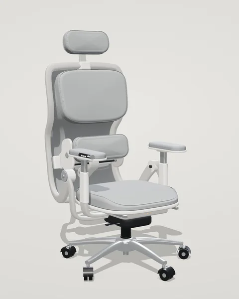
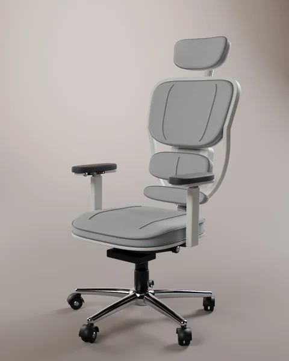
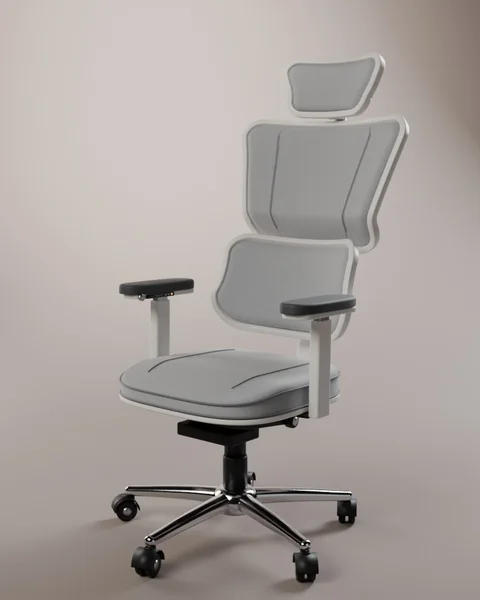
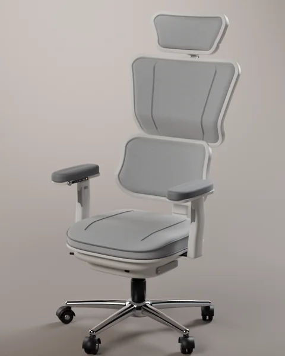
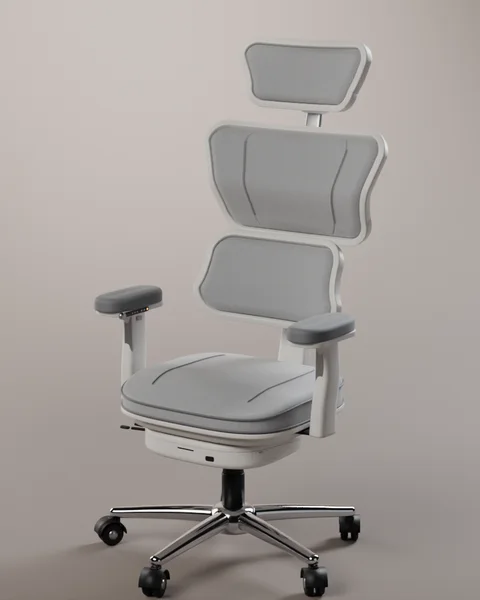
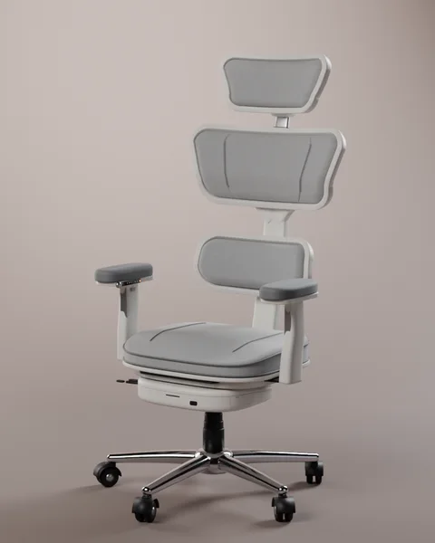
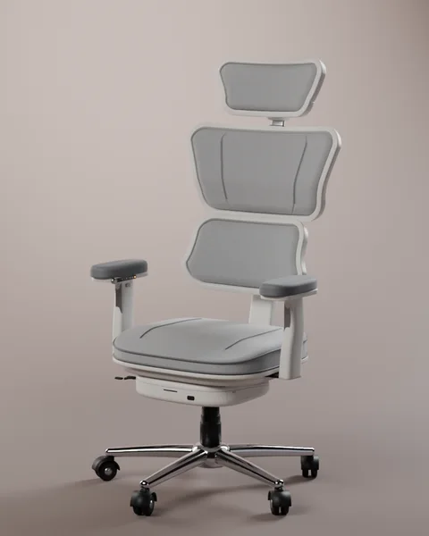
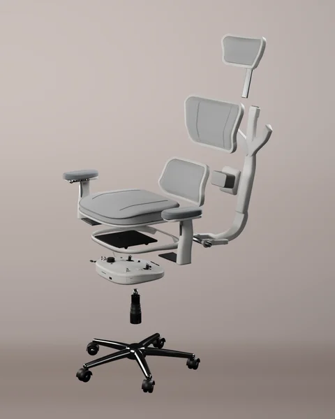
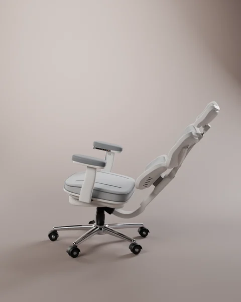

工业设计、3D 建模、iOS App
小气候
这是一把人体工学椅。上背、腰和座垫分成三个区，可以各自加热或吹风；靠背和腰托用电机调。
空调只能定一个温度。可人坐在椅子上，背、腰和大腿冷热各不一样。
所以这把椅子分成三个区，每个区自己加热或吹风。
用热成像看三个区
刚坐下
屋里 24°C，椅面和屋里一样。
座垫加热 2 档，上背 1 档
热从面料下面的电热丝往外散开，座垫到 35°C，上背到 33°C。
加热满 30 分钟，自动关
面料表面最高 43°C。电热丝超过 45°C 时，硬件直接断电，不经过软件。
屋里到了 27°C，换成通风
座垫开风 2 档，腰开风 1 档。风从面料下面吹出来，这时电热丝不通电。
起身 10 秒后，三个区都关
座上没人了，椅子就停掉加热和风扇。
鼠标移到椅子上，能读出那一点的温度
靠背和腰托用电机调。按扶手上的键，或者让 AI 照你的习惯来调。
按住箭头调靠背和腰托，或者点「AI 阅读坐姿」让 AI 来调。
腰托拨键能往四个方向推：上下调高度，前后调深度。AI 一次只动一项，靠背最多 8°，腰托高度最多 10 mm、深度最多 5 mm，两次之间至少隔 10 分钟。座高、座深、扶手和头枕只能手动调。
这把椅子能调 11 处。8 处用手调，3 处靠电机。
有两种配色。白框配浅灰面料，黑框配深灰面料。
- 面料
- 针织面料。三块软包的外套都有拉链，可以拆下来洗。
- 框和后壳
- 脊梁和立柱是铝压铸，表面喷涂；软包后壳是 PP 注塑，和框同色。
- 五星脚
- 铝压铸。白色款抛光，黑色款喷黑。
- 扶手面
- PU 发泡，磨旧了可以单独换。
拆开是 12 块零件。点一条线路，看它经过哪几块。
再往下滚，椅子会拆开。
用什么做，坏了换哪块
整把椅子分成 11 个模块。每块软包里的电热丝和探头只用一个插头接出来，坏了整块换。材料先按同类办公椅的常见做法定，最后还要请结构设计和供应商确认。
壳是 PA 注塑；软包是针织面料包泡棉；直杆是铝。
整个抽出来换。
后壳 PP 注塑，外套针织面料。里面有电热丝、温湿度探头、风袋和风扇。
外套拉开拆洗；发热层整块换。
和上背一样，多一片弹簧钢支撑片和拉它上下走的电机。
外套拆洗。
底座压铸后喷涂，芯柱是铝型材。里面是调前后的小电机和自锁丝杆。
一般不拆。
铝压铸，表面喷涂。背部的分线板和三个区的指示灯装在里面。
不拆。
座盆 PP 注塑；泡棉前沿换成软泡；压力膜判断有没有人坐。
外套拆洗；发热层整块换。
座板是冲压钢板，裙边 PP，前沿的密封条是 TPE。
—
立管铝压铸，扶手面 PU 发泡。右边扶手带控制面板和 NFC。
扶手面可以换。
托盘铝压铸，底盖 PC/ABS。里面是电池、主板、座垫风扇和滤网、两个调角器、靠背电机。
电池从仓门抽出来换；滤网可换；拧下底盖的 4 颗螺丝能修主板。
4 级气杆，行程 130 mm，标准件。
可以换。
五星脚铝压铸，脚轮是标准件。
可以换。
也可以用手机 App 调。调三个区、换场景，还能看 AI 记下了什么。
点开一个区，拖动滑块：往上是加热，往下是吹风，右边的椅子跟着变。不带手机也没关系，扶手上都能调。
锁屏和灵动岛
加热一次最多 30 分钟。开着的时候，锁屏和灵动岛上会显示还剩多久，不用打开 App。
参数
座高按坐下压实后的座面算。电池续航是估算，还没实测。
加热
33 / 35 / 37°C
三档，电热丝在面料下面。每个区单独开，加热满 30 分钟自动关。面料表面最高 43°C；电热丝到 45°C，硬件直接断电，不经过软件。
通风
40 / 70 / 100%
三个离心风扇：座垫的在底仓里，从底部格栅吸风；腰和上背的在垫子后面。风从面料下面吹出来，吹风时电热丝不通电。
电池
80Wh
插在底仓里，能抽出来单独充电；插着充电器也能边充边用。
防夹手
≤8 或 ≥25mm
电动部件之间手能伸进去的缝，按 EN 1335-2 控制：要么小到手指伸不进去，要么大到夹不住。
AI 能动的
- 三个区的档位
- 靠背角度
- 腰托高度
- 腰托深度
人坐稳了才动，一次只动一项：靠背最多 8°，腰托高度最多 10 mm、深度最多 5 mm，两次至少隔 10 分钟。手一碰拨键、旋钮或选区键，AI 就停下。
认出是谁在坐
- 扶手菜单
- NFC
- 手机
怎么做出来的
前后改了十几轮，每轮都有人挑毛病。下面是几次大的改动。

V3–V7自己编造型：侧杆、髋部转轴、一体壳。不好看，也不符合人体工学。

V8换成成熟的同步倾仰底盘，薄框上挂分开的软包。包裹感太差。

V9照参考椅的 Y 形脊梁双靠背重做，再加加热和电动。

V9b–c底部加厚放电池和主控板；腰托和底座做结实；画出走线、电机和风路。

V9d–e按欧标和国标核尺寸，转轴挪到臀部下面，做真正的同步连杆；外部评审两轮。

V9g–i为了缝隙数字改过了头：缝变大，比例变细长。

V9j–k回到认可的比例；腰托伸缩做成看得见的芯柱；座下加密封条。

V9l让 AI 也能调靠背和腰托高度；扶手上加了暂停接管键；整椅拆成 11 个模块；做了手机 App。

V9m后仰到 30° 时，座下的橡胶护套顶进叉臂 3.6 mm，重做护套形状；腰托前后改成电动，扶手上的腰托拨键变成四向。